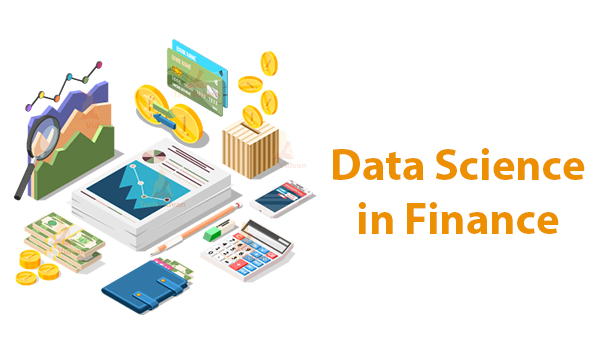

Applications of Data Science
Data Science has revolutionized numerous industries by empowering organizations to make data-driven decisions and uncover hidden patterns within large datasets. By utilizing techniques from statistics, machine learning, and data analysis, Data Science helps businesses and organizations gain actionable insights and enhance operational efficiency. Here are some key applications of Data Science:
1. Healthcare
|
Data science is transforming healthcare by enhancing diagnosis accuracy, personalizing treatments, and improving operational efficiency. By leveraging medical data, AI, and predictive models, it enables better patient outcomes, cost savings, and smarter healthcare delivery.
|
2. Finance
|  |
Data science is revolutionizing the finance industry by enabling data-driven decision-making, improving risk management, and enhancing customer experiences. With advanced analytics, predictive models, and automation, it helps businesses optimize operations and increase profitability.
|
3. Travel and Transportation
|
Data science is transforming travel and transportation by optimizing logistics, enhancing customer experiences, and improving safety. By leveraging predictive models, real-time data, and advanced analytics, it enables smarter, more efficient, and personalized solutions in the industry.
|
4. Marketing
|
Data science is revolutionizing marketing by enabling targeted campaigns, improving customer segmentation, and enhancing decision-making. Through the analysis of consumer data and market trends, it helps businesses achieve higher engagement, better ROI, and stronger brand loyalty.
|
5. E-commerce
|
Data science is transforming e-commerce by enhancing customer experiences, optimizing pricing strategies, and streamlining operations. By analyzing user behavior and market trends, it helps businesses boost sales and improve customer retention.
|
More Applications
While we are covered some of the key applications of Data Science, the field is vast, and its applications extend to many other industries. Some of the numerous areas where Data Science is making an impact include:
- Telecommunications
- Education
- Retail and E-commerce
- Government and Public Services
- Energy Management
- Cybersecurity
These are just a few examples of how Data Science is transforming industries and driving innovation worldwide.
Tools Used in Data Science
Now you've seen that there are lot of applications of Data Science, you may be wondering about the tools that make all of this possible. To dive deeper into the powerful tools that Data Science professionals use daily, click the button below.